정보통신산업기사 (2009-05-10 기출문제)
1과목: 디지털전자회로
1. 정논리(Positive Logic)의 다음 회로에서 A, B, C를 입력, Y를 출력이라고 하면 이는 어떤 논리 게이트인가?
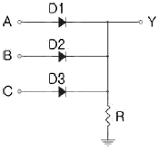
- AND 게이트
- OR 게이트
- EX-OR 게이트
- NAND 게이트
(정답률: 45%)

2. 다음 회로에서 입력전압 Vi=2[V], R1=10[kΩ]일 때 출력전압 Vo가 6[V]일 경우 Rf값은 몇 [kΩ]인가?
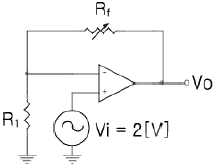
- 20
- 40
- 60
- 80
(정답률: 32%)
3. 그림과 같은 카르노 맵에서 얻어지는 불 대수식은?
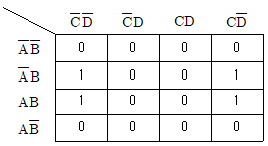
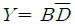
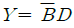
- Y=AB
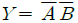
(정답률: 83%)
4. 다음은 수정편의 리액턴스 특성이다. 발진에 이용되는 각 주파수의 범위는?
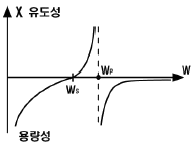
- ωs＜ω＜ωp
- ωp＜ω
- ωs＞ω
- ωs=ω
(정답률: 89%)
5. 다음 FET 증폭회로의 전압이득은 약 얼마인가? (단, gm=5[℧], rds=100[kΩ])
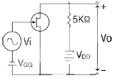
- -15.5
- -23.8
- -33.8
- -50
(정답률: 56%)
6. JK플립플롭을 사용하여 D형 플립플롭을 만들려면 외부 결선은 어떻게 하는 것이 적합한가?
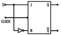
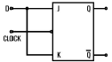
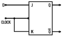
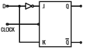
(정답률: 62%)
7. T형 플립플롭에 대한 설명으로 틀린 것은?
- 토글 플립플롭(toggle flip-flop)이라고도 한다.
- 클록이 들어올 때마다 상태가 반전된다.
- 출력파형의 주파수는 입력파형의 주파수와 동일하다.
- 1/2분주회로 또는 계수회로에 많이 쓰인다.
(정답률: 55%)
8. 다음 중 달링턴(Darlington) 이미터 플로워에 대한 설명으로 거리가 먼 것은?
- 전류 증폭률은 단일 이미터 플로워보다 커진다.
- 입력저항이 단일 이미터 플로워보다 커진다.
- 전압이득은 1에 가깝다.
- 출력저항은 단일 이미터 플로워보다 100배 이상 커진다.
(정답률: 63%)
9. 다이오드 직선검파회로에서 변조도 50[%], 진폭 10√2[V]인 AM 피변조파가 인가되었을 때 부하저항 RL에 나타나는 변조 신호파의 실효치는? (단, 검파효율은 80[%]이다.)
- 4[V]
- 5[V]
- 8[V]
- 10[V]
(정답률: 30%)
10. 전압 증폭도가 20[dB]와 60[dB]인 증폭기를 직렬로 연결하면 종합 전압이득은 얼마인가?
- 10
- 100
- 1000
- 10000
(정답률: 48%)
11. 다음 중 수정 발진기의 주파수 안정도가 양호한 이유로 가장 적합한 것은?
- 수정편의 Q가 매우 높다.
- 수정 진동자의 온도 특성이 안정적이다.
- 발진조건을 만족시키는 유도성 주파수 범위가 넓다.
- 부하변동의 영향을 전혀 받지 않는다.
(정답률: 62%)
12. 아래 논리회로에서 각 입력에 대한 출력 (Y1 Y2 Y3 Y4)은?
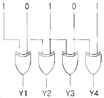
- 1000
- 1111
- 1100
- 1101
(정답률: 85%)
13. 그림과 같은 회로의 명칭은? (단, S는 합, C는 자리올림이다.)
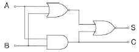
- Counter
- Full Adder
- Exclusive OR
- Half Adder
(정답률: 62%)
14. 제너 다이오드를 주로 사용하는 회로는?
- 증폭회로
- 검파회로
- 전압안정화회로
- 저주파발진회로
(정답률: 75%)
15. 연산증폭기에서 차신호에 대한 전압이득이 10000이고 공통모드 신호에 대한 전압이득이 0.5일 때 증폭기의 CMRR는 얼마인가?
- 20000
- 10000
- 4000
- 1000
(정답률: 40%)
16. 다음 논리 IC 중 전력소모가 가장 적은 것은?
- DTL
- TTL
- CMOS
- ECL
(정답률: 81%)
17. 다음 중 논리식
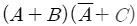
를 간단히 하면?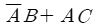
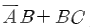
- AC+BC
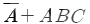
(정답률: 40%)
18. 그다음 그림에서 펄스의 반복 주파수 f[MHz]는? (단, 시간축 단위는 [μs]이다.)
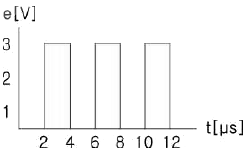
- 0.0625
- 0.125
- 0.25
- 0.5
(정답률: 48%)
19. 다음과 같은 연산 증폭회로에서 Z에 흐르는 전류 I의 값은 얼마인가?
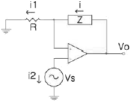
- 0
- i1
- (Z/R)i1
- i1+i2
(정답률: 60%)
20. 외부 트리거 입력신호가 인가되는 경우에만 폭이 0.1[ms]이고 전압이 5[V]인 펄스를 발생시켜 출력하고자 한다. 이러한 목적에 가장 적합한 것은?
- 시미트 트리거회로
- 비안정 멀티바이브레이터
- 쌍안정 멀티바이브레이터
- 단안정 멀티바이브레이터
(정답률: 40%)
2과목: 정보통신기기
21. 다음 중 컴퓨터가 설치된 장소와 동일 장소에 여려 개의 단말기가 밀집되어 있는 경우, 다수의 단말기를 컴퓨터의 포트에 연결하기 위한 것은?
- 모뎀 공동이용기
- 회선 공동이용기
- DSU 공동이용기
- CSU 공동이용기
(정답률: 57%)
22. 원격 감시기의 전파를 발사해서 목표물에 반사되어 수신된 시간이 0.1[㎲]일 때 목표물까지의 거리는?
- 15[m]
- 10[m]
- 5[m]
- 1[m]
(정답률: 38%)
23. 다음 중 비동기식 전송의 특징이 아닌 것은?
- 각 문자는 앞에 시작 비트와 뒤에 정지 비트를 갖는다.
- 직렬 펄스로 전송한다.
- 패리티 비트에 의해 수신단에서 오전송 여부를 판별할 수 있다.
- 정확한 전송이 되도록 모뎀, 터미널 등에 의해 타이밍 신호가 공급된다.
(정답률: 40%)
24. 다음 중 무선통신에서 변조를 하는 이유가 아닌 것은?
- 복사를 쉽게 하기 위하여
- 잡음과 간섭을 줄이기 위하여
- 송ㆍ수신 장치를 단순화 하기 위하여
- 전송 효율을 높이고 다중화 기능을 위하여
(정답률: 58%)
25. 다음 중 지능 다중화기의 설명으로 옳지 않은 것은?
- 전송량이 많을 경우 전송지연이 발생 할 수 있다.
- 지능 다중화기는 동기식이다.
- 실제 데이터가 있는 터미널에만 동적으로 TIME SLOT을 할당한다.
- 기억 메모리 및 주소제어가 필요하다.
(정답률: 75%)
26. 다음 중 PC와 PC, PC와 전화간의 음성 통화를 지원할 수 있는 것은?
- MHS
- 텔레텍스트
- DMB
- 인터넷 폰
(정답률: 70%)
27. 고속의 데이터 전송기술인 xDSL에서 사용되는 변조방식이 아닌 것은?
- QAM
- DMT
- CAP
- PCM
(정답률: 66%)
28. 통신 위성체는 통신기기 시스템과 공통기기 시스템으로 나눌 수 있다. 다음 중 공통기기에 해당하지 않는 것은?
- 텔레메트리 명령계
- 중계기계
- 추진계
- 자세 제어계
(정답률: 32%)
29. 다음 중 위성통신의 일반적인 설명으로 틀린 것은?
- 지상재해의 영향이 적다.
- 회선설정의 유연성이 있다.
- 고품질의 광대역 통신이 가능하다.
- 전송지연 없이 통신이 가능하다.
(정답률: 79%)
30. 다음 중 종이에 기록된 문자를 반사광을 이용하여 인식하는 입력장치는?
- OMR
- OCR
- MMR
- MICR
(정답률: 59%)
31. 다음 중 전전자 교환기의 통화부로 구성요소가 아닌 것은?
- 가입자선 정합부
- 통화로 망
- 입출력 장치
- 중계선 정합부
(정답률: 32%)
32. 이동통신 시스템에서 다중경로 전파에 의하여 수신신호가 시간에 따라 변화되는 현상을 무엇이라 하는가?
- 페이딩
- 동일채널 간섭
- 지연확산
- 인접채널 간섭
(정답률: 76%)
33. 다음 중 디지털 지상파방송 ATSC의 사양으로 틀린 것은?
- 비디오 압축 : MPEG-2
- 오디오 압축 : 돌비 AC-3
- 전송용량 : 19.39[Mbps]
- 변조방식 : FM
(정답률: 53%)
34. CATV의 핵심 구성요소로 수신안테나에서 수신한 각 채널의 신호를 변환하여 중계 전송망을 통해 가입자에게 송출하는 것은?
- 헤드엔드
- 간선제어기
- 프레임 메모리
- 게이트웨이 프로세서
(정답률: 46%)
35. 단말기의 데이터를 전송신호로 변환하는 목적으로 가장 적합한 것은?
- 컴퓨터가 처리하는데 쉽게 하기 위함
- 유선의 경제적인 운용 이점을 활용하기 위함
- 다양한 신호를 효율적으로 증폭하기 위함
- 공통된 신호선을 이용하여 신호를 데이터 형식으로 전송한다.
(정답률: 29%)
36. 다음 중 공통선 신호방식에 대한 설명으로 틀린 것은?
- No.6 신호방식과 No.7 신호방식이 있다.
- 국간 신호방식으로 R2 MFC 방식이라 한다.
- 프로토콜 계층으로 MTP, SCCP 및 TACP 등의 구조로 되어있다.
- 공통된 신호선을 이용하여 신호를 데이터 형식으로 전송한다.
(정답률: 35%)
37. DTE와 DCE를 상호 연결하기 위해 기계적, 전기적, 기능적, 절차적인 조건들을 표준화한 것은?
- 토폴로지
- DCE 아키텍처
- DTE/DCE 인터페이스
- 참조 모형
(정답률: 74%)
38. 다음 중 CATV의 구성에서 전송계로만 이루어진 것은?
- 수신설비, 스튜디오설비, 송출설비
- 간선, 분배선, 인입선
- 보안기, 컨버터, 결합기
- 변조기, 복조기, 분배기
(정답률: 65%)
39. 다음 중 데스크톱 화상회의 시스템에서 화상신호를 부호화 및 복호화 하는 것은?
- 라우터
- CRT
- 모뎀
- 코덱
(정답률: 58%)
40. 그림, 차트, 도표, 설계도면을 읽어 디지털화하여 컴퓨터에 입력시키는 것은?
- 디지타이저
- 그래픽단말기
- 터치스크린
- 문자판독기
(정답률: 62%)
3과목: 정보전송개론
41. HDLC 프로토콜에서 흐름 제어와 오류 제어를 위해 사용되며 제어 필드의 처음 2비트가 10이면 무슨 프레임인가?
- I-프레임
- U-프레임
- S-프레임
- T-프레임
(정답률: 24%)
42. 다음 중 디지털 정보신호에 따라 반송파의 위상을 변화시켜 전송하는 디지털 변조방식은?
- ASK
- FSK
- PSK
- PCM
(정답률: 70%)
43. 다음 중 UTP 케이블에 대한 설명으로 적합하지 않은 것은?
- 가격이 싸고 설치가 쉽다.
- STP 케이블 보다 유연성이 좋다.
- 외부가 전자파 간섭이나 잡음의 영향을 많이 받는다.
- 전화 가입자선으로는 적합하나 데이터 전송선으로는 부적합하다.
(정답률: 68%)
44. 8비트 정보에 1개의 스타트(Start) 비트와 1개의 스톱 비트를 추가하여 전송하면 전송효율은 약 몇 [%]인가?
- 25[%]
- 50[%]
- 80[%]
- 100[%]
(정답률: 56%)
45. 데이터 전송방식에 대한 설명 중 동기식 전송방식에 해당하는 것은?
- 정보전송 형태는 문자단위로 이루어진다.
- 각 문자 앞에는 1개의 start 비트가 있다.
- 수신측 단말에 버퍼기억장치가 필요하다.
- 전송되는 각 글자 사이에는 일정치 않은 휴식 기간이 있을 수있다.
(정답률: 36%)
46. 전송제어 5단계 중 3단계에 해당하는 것은?
- 회선접속
- 정보전송
- 회선전달
- 데이터링크 설정
(정답률: 64%)
47. 다음 중 병렬 전송 방식의 특징에 대한 설명으로 가장 적합한 것은?
- 전송속도가 느리다.
- 전송로 비용이 상승한다.
- 주로 원거리 전송에 사용한다.
- 직병렬 변환회로가 필요하다.
(정답률: 60%)
48. OSI 7 계층에서 데이터의 압축, 암호화 등의 역할을 수행하는 계층은?
- 물리계층
- 세션계층
- 표현계층
- 데이터링크계층
(정답률: 48%)
49. 다음 중 PCM 방식의 송신측 과정에서 가장 적합한 것은?
- 압축 → 표본화 → 양자화 → 부호화 → 전송
- 부호화 → 표본화 → 양자화 → 압축 → 전송
- 표본화 → 압축 → 양자화 → 부호화 → 전송
- 양자화 → 표본화 → 부호화 → 압축 → 전송
(정답률: 41%)
50. 다음 중 위성통신의 특징에 대한 설명으로 적합하지 않은 것은?
- 광역성
- 동보성
- 대용량, 고품질 전송
- 전송지연 없이 통신 가능
(정답률: 74%)
51. 다음 중 직류 억압 부호에 속하지 않는 것은?
- Bipolar 방식
- Manchester 방식
- CMI 방식
- NRZ 방식
(정답률: 39%)
52. 채널 대역폭이 100[㎑]이고, S/N 이 15 일 때 채널용량은 몇 [kbps]인가?
- 100[kbps]
- 200[kbps]
- 300[kbps]
- 400[kbps]
(정답률: 50%)
53. 다음 중 잘못된 비트를 검출하여 정정도 할 수 있는 코드는?
- 해밍코드
- 패리티코드
- 그레이코드
- 아스키코드
(정답률: 71%)
54. PCM 방식에서 표본화 주파수가 8[㎑]이면 표본화 주기는 몇 [㎲]인가?
- 8[㎲]
- 56[㎲]
- 64[㎲]
- 125[㎲]
(정답률: 64%)
55. 다음 중 프로토콜의 기능으로 적합하지 않은 것은?
- 단순화
- 라우팅
- 전송제어
- 데이터의 분할 및 조립
(정답률: 45%)
56. 다음 중 예측기를 사용하지 않고 양자화하는 방법에 해당하는 것은?
- DM
- PCM
- ADM
- DPCM
(정답률: 44%)
57. 5000[bps]데이터 신호속도를 1시가 동안 전송했을 때 에러 비트가 18 비트였다면 비트 에러율은 얼마인가?
- 10-4
- 10-5
- 10-6
- 10-7
(정답률: 39%)
58. 4진 PSK의 반송파 간의 위상차는 몇 도인가?
- 45도
- 90도
- 180도
- 360도
(정답률: 50%)
59. 광섬유의 재료 자체(불순물)에 흡수되어 열로 변환됨으로써 발생하는 손실을 무엇이라 하는가?
- 흡수손실
- 결합손실
- 산란손실
- 마이크로밴딩손실
(정답률: 70%)
60. 다음 중 동선과 비교한 광섬유의 특징에 대한 설명으로 적합하지 않은 것은?
- 저손실이다.
- 유연성이 좋다.
- 무게가 가볍다.
- 광대역 전송에 적합하다.
(정답률: 63%)
4과목: 전자계산기일반 및 정보설비기준
61. 분기(branch), 인터럽트 혹은 서브루틴 명령이 실행되기 위해서는 다음 중 어느 레지스터의 내용이 변경되어야 하는가?
- 누산기(accumulator)
- 프로그램 카운터(program counter)
- 인덱스 레지스터(index register)
- PSW(program status word)
(정답률: 50%)
62. 병행 프로그래밍에서 임계 구역에 대한 설명으로 가장 옳은 것은?
- 동시에 둘 이상의 프로세스가 동시에 접근해서 안되는 공유 자원을 접근하는 코드의 일부를 말한다.
- 동시에 둘 이상의 프로세스가 동시에 독점 자원을 접근하는 코드의 일부를 말한다.
- 동시에 둘 이상의 프로세스가 순차적으로 접근해서는 안되는 공유 자원을 접근하는 코드의 일부를 말한다.
- 동시에 둘 이상의 프로세스가 순차적으로 독점 자원을 접근하는 코드의 일부를 말한다.
(정답률: 37%)
63. 다음 중 비선점 스케줄링에 포함되지 않는 것은?
- FIFO(first in first out)
- SJF(short job forst)
- HRN(highest response ratio next)
- SRT(shortest remaining time)
(정답률: 35%)
64. CPU의 상태를 나타내는 플래그(flag)가 아닌 것은?
- 패리티(parity) 플래그
- 사인(sign) 플래그
- 트랩(trap) 플래그
- 제로(zero) 플래그
(정답률: 40%)
65. 다음 중 AND 마이크로 동작을 수행한 결과와 같은 동작을 하는 것은?
- Mask 동작
- Shift 동작
- EX-OR 동작
- Packing 동작
(정답률: 60%)
66. 다음 중 그레이 코드(Gray Code)의 특성과 거리가 먼 것은?
- 데이터전송
- 입출력장치
- 사칙연산
- A/D convertor
(정답률: 34%)
67. -9의 고정 소수점형식으로 표현한 것 중 틀린 것은?
- 10001001
- 11110110
- 11100110
- 11110111
(정답률: 15%)
68. 중앙처리장치와 유사한 기능을 보유한 입출력 프로세서 혹은 입출력 컴퓨터를 추가하여 입출력 기능을 강화시킨 것은?
- 중앙처리장치에 의한 입출력
- 폴링에 의한 입출력
- DMA에 의한 입출력
- 채널에 의한 입출력
(정답률: 42%)
69. 다음 중 자기보수(Self Complement)코드의 종류가 아닌 것은?
- 그레이 코드
- 3-초과 코드
- 2421 코드
 코드
코드
(정답률: 39%)
70. 다음 전송로(버스) 중 입출력 인터페이스 사이의 버스가 아닌것은?
- 제어버스
- 주소버스
- 데이터버스
- 시스템버스
(정답률: 40%)
71. 전기통신설비가 다른 사람의 전기통신설비와 접속되는 경우에 그 건설과 보전에 관한 책임 등의 한계를 명확하게 하기 위하여 설정되어야 하는 것은?
- 분계점
- 단자함
- 접속점
- 기준점
(정답률: 50%)
72. 다음 ( ) 안에 들어갈 내용으로 가장 적합한 것은?
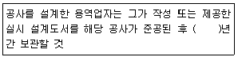
- 1
- 2
- 3
- 5
(정답률: 40%)
73. 다음 중 정보통신공사업자 외의 자가 시공할 수 있는 경미한 공사에 속하지 않는 것은?
- 실험국의 무선설비 설치공사
- 간이무선국의 무선설비 설치공사
- 건축물에 설치되는 5회선 이하의 구내통신선로 설비공사
- 연면적 이천 제곱미터 이하의 건축물의 자가 유선방송설비 공사
(정답률: 62%)
74. 재직 중에 통신에 관하여 알게 된 타인의 비밀을 누설한 자에 대한 벌칙은?
- 1년 이하의 징역 또는 5천만원 이하의 벌금
- 2년 이하의 징역 또는 1억원 이하의 벌금
- 3년 이하의 징역 또는 1억 5천만원 이하의 벌금
- 5년 이하의 징역 또는 2억원 이하의 벌금
(정답률: 35%)
75. 다음 중 보편적 역무의 구체적 내용을 정할시 고려사항에 속하지 않는 것은?
- 정보화촉진
- 사회복지 증진
- 전기통신기본계획
- 공공의 이익과 안전
(정답률: 32%)
76. 다음 ( )안에 들어갈 내용으로 가장 적합한 것은?
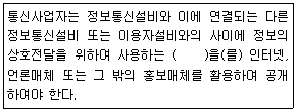
- 통신규약
- 기술기준
- 안전기준
- 상호규약
(정답률: 53%)
77. 다음 ( ) 안에 들어갈 내용으로 가장 적합한 것은?
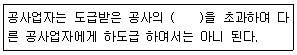
- 100분의 10
- 100분의 30
- 100분의 50
- 100분의 70
(정답률: 43%)
78. 다음 ( ) 안에 들어갈 내용으로 가장 적합한 것은?
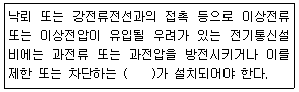
- 보호기
- 퓨즈
- 스위치
- 차단기
(정답률: 24%)
79. 방송통신위원회가 전기통신설비 통합운영계획을 수립하여 최종적으로 누구의 승인을 얻어야 하는가?
- 대통령
- 국무총리
- 설비의 설치자
- 관계 행정기관의 장
(정답률: 36%)
80. 사업자의 교환설비로부터 이용자 전기통신설비의 최초단자에 이르기까지의 사이에 구성되는 회선은?
- 국선
- 단말장치
- 전송설비
- 국선접속설비
(정답률: 58%)